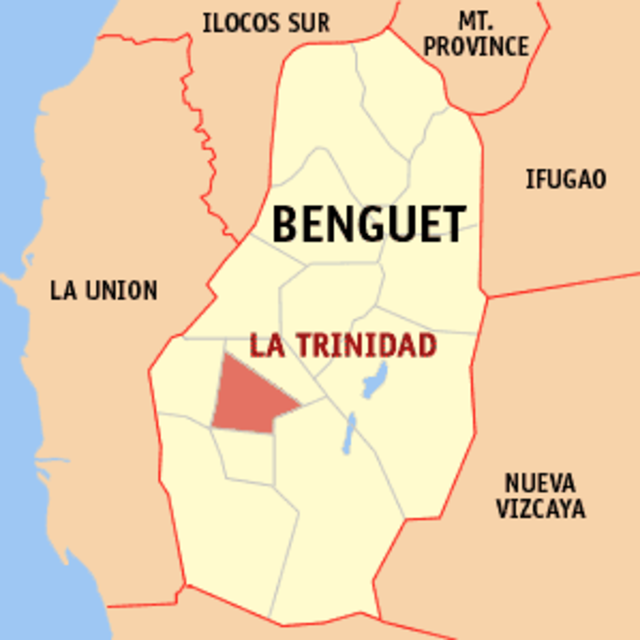
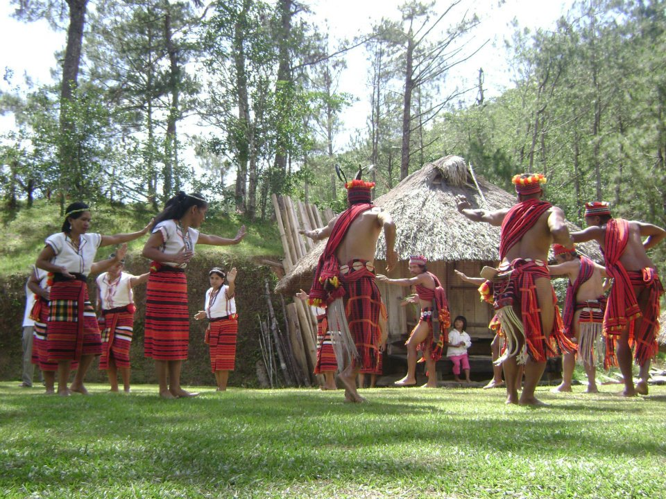

<!DOCTYPE html>
<html>
<meta charset="UTF-8">
<meta http-equiv="X-UA-Compatible" content="IE=edge">
<meta name="viewport" content="width=device-width, initial-scale= 1.0">
<link rel="stylesheet" href="Benguet.css">
<title>YCordillera</title>  </html>
<header class="header">
  <a href="#" class="logo">YCORDILLERA AK</a>
  <nav class="navbar">
    <a href="Jacob_Website.html">Home</a>
    <a href="Jacob_Websiteabout.html" onclick="return confirm('Info about the website not the creator')" >About </a>
    <a href="Jacob_Websitecontacts.html">Contact</a>
    <button class="button"><a href="WebsiteSignin.html">Sign in</a></button>
    <button class="button"><a href="WebsiteSignup.html">Sign up</a></button>
  </nav>
</header>
<body>
    
    <p class="homedesc1">
        Benguet Province occupies the southern tip of the Cordillera Mountain Range in 
        the northern part of the Luzon Island. It has a Mountainous terrain of peaks, ridges and canyons; 
        and a temperate and generally pleasant climate. Its capital is La Trinidad.
    </p>
    <p class="homedesc2">
        With picturesque mountain views, tranquil atmosphere, and cool breeze, Benguet provides 
        a refreshing escape from the busy city life. Benguet is most known for being the home of Baguio City,
         a top tourist destination that is also called the Summer Capital of the Philippines.
    </p>
</body>
<body>
    
    <p class="homedesc3">Aside from its huge and bountiful vegetable production, Benguet is also famed for its 
        expansive flower farms, which sees huge harvests of colorful blooms that are sold throughout the entire country.
    </p>
    <p class="homedesc4">
     The culture of Benguet
    The Benguet folks believe in the existence of unseen beings that emanate from the skyworld and underworld and 
    that these unseen beings are thought to have power over man. Although unseen, it is believed that these spirits 
    cannot only be fatal to man but can also be manipulated by man to his advantage.  
    </p>
    <p class="homedesc5">
         Tribe  in Benguet 
    The Ibaloi (also Ibaloy, Ibaluy, Nabaloi, Inavidoy, Inibaloi, Ivadoy) and Kalanguya (also Kallahan and Ikalahan) 
    are one of the indigenous peoples of the Philippines who live mostly in the southern part of Benguet, 
    located in the Cordillera of northern Luzon, and Nueva Vizcaya in the Cagayan Valley region. The local language of Benguet,
    The Main Dialect Used are Kankana-ey, Ibaloi, and Kalanguya. Migrants however also brought in their own Dialect. Most speak Ilocano. 
    </p>

</body>
<footer>
    jacobivanfranzrandall@gmail.com . All rights Reserved
  </footer>